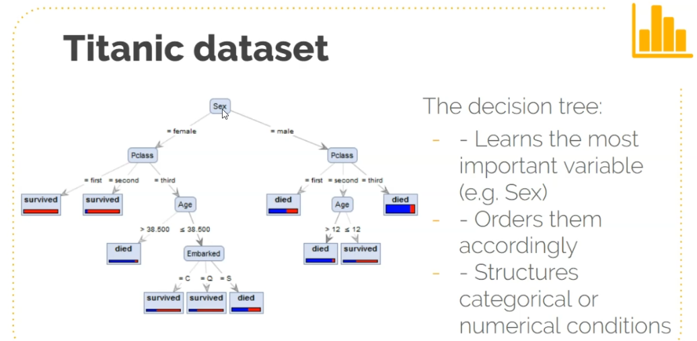

import os
import pandas as pdML Training
Test a machine learning model
PROTIP - type function name with empty paranthesis and press shift+tab inside paranthesis to see documentation
data_dir = "./data/titanic"
df = pd.read_csv(os.path.join(data_dir, "train.csv"))
df.sample(5)| PassengerId | Survived | Pclass | Name | Sex | Age | SibSp | Parch | Ticket | Fare | Cabin | Embarked | |
|---|---|---|---|---|---|---|---|---|---|---|---|---|
| 301 | 302 | 1 | 3 | McCoy, Mr. Bernard | male | NaN | 2 | 0 | 367226 | 23.25 | NaN | Q |
| 179 | 180 | 0 | 3 | Leonard, Mr. Lionel | male | 36.0 | 0 | 0 | LINE | 0.00 | NaN | S |
| 865 | 866 | 1 | 2 | Bystrom, Mrs. (Karolina) | female | 42.0 | 0 | 0 | 236852 | 13.00 | NaN | S |
| 112 | 113 | 0 | 3 | Barton, Mr. David John | male | 22.0 | 0 | 0 | 324669 | 8.05 | NaN | S |
| 530 | 531 | 1 | 2 | Quick, Miss. Phyllis May | female | 2.0 | 1 | 1 | 26360 | 26.00 | NaN | S |
y= dependent variable
x = independent variable
y = df["Survived"]
x = df.drop(["Survived", "PassengerId"], axis=1)x.sample()| Pclass | Name | Sex | Age | SibSp | Parch | Ticket | Fare | Cabin | Embarked | |
|---|---|---|---|---|---|---|---|---|---|---|
| 732 | 2 | Knight, Mr. Robert J | male | NaN | 0 | 0 | 239855 | 0.0 | NaN | S |
from sklearn.model_selection import train_test_split# Order matters (train, test)
# test_size = what percent of training data goes into test model
x_train, x_test, y_train, y_test = train_test_split(x, y, test_size=0.1)x_train.shape(801, 10)x_test.shape(90, 10)Decision Trees - nodes, branches, leafs
Prone to overfitting. Overcome by using random forests and using multiple iterations

First ML Model
Getting started
import os
import pandas as pd
from sklearn.model_selection import train_test_split
data_dir = "./data/titanic"
df = pd.read_csv(os.path.join(data_dir, "train.csv"))
df.sample(5)
y = df["Survived"]
x = df.drop(["Survived", "PassengerId"], axis=1)
x_train, x_test, y_train, y_test = train_test_split(x, y, test_size=0.1)
df.info()
df.describe()<class 'pandas.core.frame.DataFrame'>
RangeIndex: 891 entries, 0 to 890
Data columns (total 12 columns):
# Column Non-Null Count Dtype
--- ------ -------------- -----
0 PassengerId 891 non-null int64
1 Survived 891 non-null int64
2 Pclass 891 non-null int64
3 Name 891 non-null object
4 Sex 891 non-null object
5 Age 714 non-null float64
6 SibSp 891 non-null int64
7 Parch 891 non-null int64
8 Ticket 891 non-null object
9 Fare 891 non-null float64
10 Cabin 204 non-null object
11 Embarked 889 non-null object
dtypes: float64(2), int64(5), object(5)
memory usage: 83.7+ KB| PassengerId | Survived | Pclass | Age | SibSp | Parch | Fare | |
|---|---|---|---|---|---|---|---|
| count | 891.000000 | 891.000000 | 891.000000 | 714.000000 | 891.000000 | 891.000000 | 891.000000 |
| mean | 446.000000 | 0.383838 | 2.308642 | 29.699118 | 0.523008 | 0.381594 | 32.204208 |
| std | 257.353842 | 0.486592 | 0.836071 | 14.526497 | 1.102743 | 0.806057 | 49.693429 |
| min | 1.000000 | 0.000000 | 1.000000 | 0.420000 | 0.000000 | 0.000000 | 0.000000 |
| 25% | 223.500000 | 0.000000 | 2.000000 | 20.125000 | 0.000000 | 0.000000 | 7.910400 |
| 50% | 446.000000 | 0.000000 | 3.000000 | 28.000000 | 0.000000 | 0.000000 | 14.454200 |
| 75% | 668.500000 | 1.000000 | 3.000000 | 38.000000 | 1.000000 | 0.000000 | 31.000000 |
| max | 891.000000 | 1.000000 | 3.000000 | 80.000000 | 8.000000 | 6.000000 | 512.329200 |
# Count number of null values per column
df.isnull().sum()PassengerId 0
Survived 0
Pclass 0
Name 0
Sex 0
Age 177
SibSp 0
Parch 0
Ticket 0
Fare 0
Cabin 687
Embarked 2
dtype: int64# List all of peoples tables
def get_title(name):
if "." in name:
return name.split(",")[1].split(".")[0].strip()
else:
return "Unknown"
titles = sorted(set([x for x in df.Name.map(lambda x: get_title(x))]))
print("Different titles found in the dataset: ")
print(len(titles), ":", titles)Different titles found in the dataset:
17 : ['Capt', 'Col', 'Don', 'Dr', 'Jonkheer', 'Lady', 'Major', 'Master', 'Miss', 'Mlle', 'Mme', 'Mr', 'Mrs', 'Ms', 'Rev', 'Sir', 'the Countess']# Normalize the titles
def replace_titles(x):
title = x["Title"]
if title in ["Capt", "Col", "Major"]:
return "Officer"
elif title in ["Jonkheer", "Don", "the Countess", "Dona", "Lady", "Sir"]:
return "Royalty"
elif title in ["Mme"]:
return "Mrs"
elif title in ["Mlle", "Ms"]:
return "Miss"
else:
return title
df["Title"] = df["Name"].map(lambda x: get_title(x))
df["Title"] = df.apply(replace_titles, axis=1)
print(df.Title.value_counts())Mr 517
Miss 185
Mrs 126
Master 40
Dr 7
Rev 6
Officer 5
Royalty 5
Name: Title, dtype: int64df["Age"].fillna(df["Age"].median(), inplace=True)
df["Fare"].fillna(df["Fare"].median(), inplace=True)
df["Embarked"].fillna("S", inplace=True)
df.drop("Cabin", axis=1, inplace=True)
df.drop("Ticket", axis=1, inplace=True)
df.drop("Name", axis=1, inplace=True)
df.Sex.replace(("male", "female"), (0, 1), inplace=True)
df.Embarked.replace(("S", "C", "Q"), (0, 1, 2), inplace=True)
df.Title.replace(
("Mr", "Miss", "Mrs", "Master", "Dr", "Rev", "Office", "Royalty"),
(0, 1, 2, 3, 4, 5, 6, 7),
inplace=True,
)
print(df.isnull().sum())
print(df["Sex"].sample(5))
print(df.columns)PassengerId 0
Survived 0
Pclass 0
Sex 0
Age 0
SibSp 0
Parch 0
Fare 0
Embarked 0
Title 0
dtype: int64
791 0
161 1
284 0
323 1
127 0
Name: Sex, dtype: int64
Index(['PassengerId', 'Survived', 'Pclass', 'Sex', 'Age', 'SibSp', 'Parch',
'Fare', 'Embarked', 'Title'],
dtype='object')# Correlate 2 columns
corr = df.corr()
corr.SurvivedPassengerId -0.005007
Survived 1.000000
Pclass -0.338481
Sex 0.543351
Age -0.064910
SibSp -0.035322
Parch 0.081629
Fare 0.257307
Embarked 0.106811
Name: Survived, dtype: float64Machine Learning Model - Putting it all together
import os
import pandas as pd
from sklearn.model_selection import train_test_split
data_dir = "../10_Data Science/data/titanic"
df = pd.read_csv(os.path.join(data_dir, "train.csv"))
df.sample(5)
# List all of peoples tables
def get_title(name):
if "." in name:
return name.split(",")[1].split(".")[0].strip()
else:
return "Unknown"
titles = sorted(set([x for x in df.Name.map(lambda x: get_title(x))]))
# Normalize the titles
def replace_titles(x):
title = x["Title"]
if title in ["Capt", "Col", "Major"]:
return "Officer"
elif title in ["Jonkheer", "Don", "the Countess", "Dona", "Lady", "Sir"]:
return "Royalty"
elif title in ["Mme"]:
return "Mrs"
elif title in ["Mlle", "Ms"]:
return "Miss"
else:
return title
df["Title"] = df["Name"].map(lambda x: get_title(x))
df["Title"] = df.apply(replace_titles, axis=1)
# Normalize data
df["Age"].fillna(df["Age"].median(), inplace=True)
df["Fare"].fillna(df["Fare"].median(), inplace=True)
df["Embarked"].fillna("S", inplace=True)
df.drop("Cabin", axis=1, inplace=True)
df.drop("Ticket", axis=1, inplace=True)
df.drop("Name", axis=1, inplace=True)
df.Sex.replace(("male", "female"), (0, 1), inplace=True)
df.Embarked.replace(("S", "C", "Q"), (0, 1, 2), inplace=True)
df.Title.replace(
("Mr", "Miss", "Mrs", "Master", "Dr", "Rev", "Officer", "Royalty"),
(0, 1, 2, 3, 4, 5, 6, 7),
inplace=True,
)
y = df["Survived"]
x = df.drop(["Survived", "PassengerId"], axis=1)
# print(x.sample())
# print(y.sample())
x_train, x_val, y_train, y_val = train_test_split(x, y, test_size=0.1)# Saving the model
import pickle
from sklearn.ensemble import RandomForestClassifier
from sklearn.metrics import accuracy_score
randomforest = RandomForestClassifier() # initiate random forest classification
randomforest.fit(x_train, y_train) # train the model
y_pred = randomforest.predict(x_val) # Make some predicions using the x validation
acc_randomforest = round(accuracy_score(y_pred, y_val) * 100, 2)
print("Accuracy: {}".format(acc_randomforest))
pickle.dump(randomforest, open("titanic_model.sav", "wb"))Accuracy: 83.33Make some ML predictions
df_test = pd.read_csv(os.path.join(data_dir, "test.csv"))
df_test["Title"] = df_test["Name"].map(lambda x: get_title(x))
df_test["Title"] = df_test.apply(replace_titles, axis=1)
ids = df_test["PassengerId"]
df_test["Age"].fillna(df["Age"].median(), inplace=True)
df_test["Fare"].fillna(df["Fare"].median(), inplace=True)
df_test["Embarked"].fillna("S", inplace=True)
df_test.drop("Cabin", axis=1, inplace=True)
df_test.drop("Ticket", axis=1, inplace=True)
df_test.drop("Name", axis=1, inplace=True)
df_test.drop("PassengerId", axis=1, inplace=True)
df_test.Sex.replace(("male", "female"), (0, 1), inplace=True)
df_test.Embarked.replace(("S", "C", "Q"), (0, 1, 2), inplace=True)
df_test.Title.replace(
("Mr", "Miss", "Mrs", "Master", "Dr", "Rev", "Officer", "Royalty"),
(0, 1, 2, 3, 4, 5, 6, 7),
inplace=True,
)
df_test.sample()| Pclass | Sex | Age | SibSp | Parch | Fare | Embarked | Title | |
|---|---|---|---|---|---|---|---|---|
| 110 | 2 | 0 | 41.0 | 0 | 0 | 15.0458 | 1 | 0 |
predictions = randomforest.predict(df_test)
output = pd.DataFrame({"PassengerId": ids, "Survived": predictions})
output.to_csv("submission.csv", index=False)import numpy as np
x = [1, 2, 3, 4, 5]
y = [5, 7, 9, 13, 23]
m, b = np.polyfit(x, y, 1)
print(m, b)4.2 -1.2000000000000026ML Compiled Predictor
Compiled machine learning predictor.
import os
import pickle
import pandas as pd
from sklearn.model_selection import train_test_split
from sklearn.ensemble import RandomForestClassifier
from sklearn.metrics import accuracy_score
data_dir = "./data/titanic"
df = pd.read_csv(os.path.join(data_dir, "train.csv"))
# List all of peoples tables
def get_title(name):
if "." in name:
return name.split(",")[1].split(".")[0].strip()
else:
return "Unknown"
# Normalize the titles
def replace_titles(x):
title = x["Title"]
if title in ["Capt", "Col", "Major"]:
return "Officer"
elif title in ["Jonkheer", "Don", "the Countess", "Dona", "Lady", "Sir"]:
return "Royalty"
elif title in ["the Countess", "Mme", "Lady"]:
return "Mrs"
elif title in ["Mlle", "Ms"]:
return "Miss"
else:
return title
df["Title"] = df["Name"].map(lambda x: get_title(x))
df["Title"] = df.apply(replace_titles, axis=1)
# Normalize data
df["Age"].fillna(df["Age"].median(), inplace=True)
df["Fare"].fillna(df["Fare"].median(), inplace=True)
df["Embarked"].fillna("S", inplace=True)
df.drop("Cabin", axis=1, inplace=True)
df.drop("Ticket", axis=1, inplace=True)
df.drop("Name", axis=1, inplace=True)
df.Sex.replace(("male", "female"), (0, 1), inplace=True)
df.Embarked.replace(("S", "C", "Q"), (0, 1, 2), inplace=True)
df.Title.replace(
("Mr", "Miss", "Mrs", "Master", "Dr", "Rev", "Officer", "Royalty"),
(0, 1, 2, 3, 4, 5, 6, 7),
inplace=True,
)
y = df["Survived"]
x = df.drop(["Survived", "PassengerId"], axis=1)
x_train, x_val, y_train, y_val = train_test_split(x, y, test_size=0.1)
randomforest = RandomForestClassifier() # initiate random forest classification
randomforest.fit(x_train, y_train) # train the model
pickle.dump(randomforest, open("titanic_model.sav", "wb"))def prediction_model(pclass, sex, age, sibsp, parch, fare, embarked, title):
import pickle
x = [[pclass, sex, age, sibsp, parch, fare, embarked, title]]
randomforest = pickle.load(open("titanic_model.sav", "rb"))
predictions = randomforest.predict(x)
print(predictions)
prediction_model(1, 1, 11, 1, 1, 19, 1, 1)